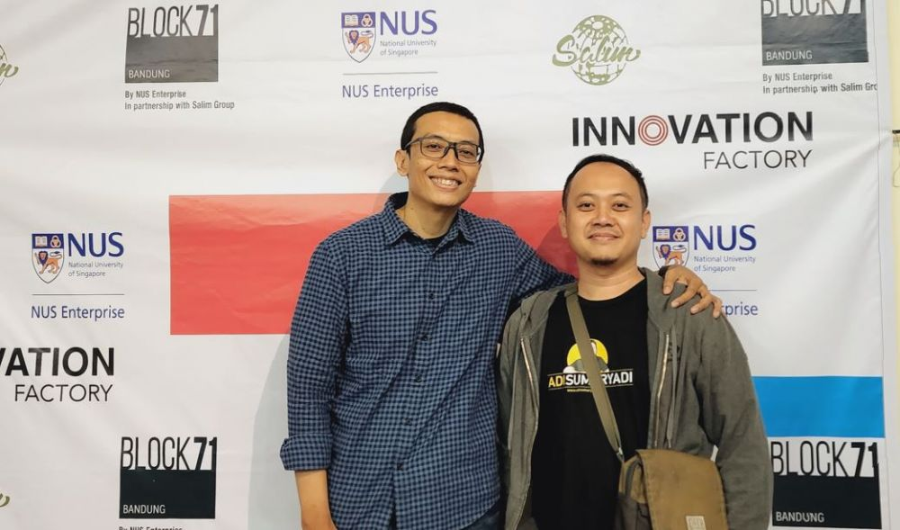

Assalammualaikum WR. WB
Saya Naufal Rabbani Jamil ingin memberikan penjelasan mengenai IDOLA FAVORIT. Simak materi dibawah ini ya teman - teman :|
Denefisi Idola adalah sosok orang yang bertalenta, berprestasi, memiliki status, atau penampilan fisik yang diakui dan dihargai oleh penggemarnya dikutip dari Google. Tentu saja, setiap orang pasti memiliki Idolanya masing - masing.
Salah satunya adalah Sandika Galih, Ia merupakan dosen yang mengajar di Universitas Pasundan atau yang sering kali dikenali dengan sebutan UNPAD dan juga Ia adalah Content Creator di halaman Youtube bernama Web Progamming UNPAS. Dan untuk para kalangan coders mungkin sudah tidak asing lagi dengan beliau dikarenakan Ia sering kali mengupload tentang bagaimana pembuatan Website dengan detail seperti HTML, CSS, CMS, Java, Python, DLL.

Dikutip dari Beritainn.com, Salah satu webpro dari Indonesia yang memang konsisten membagikan ilmu pembelajaran web programming yakni Sandhika Galih, mengaku banyak hal yang membuatnya masih terus semangat untuk berbagi materi web programming. Terutama karena antusiasme sesama web programmer untuk terus belajar.
“Dosen saya saat S2, Pak Rahard, menjadi idola saya sejak pertemuan pertama kuliah dan sampai sekarang juga masih konsisten berbagai ilmu lewat tulisan dan channel Youtube. Selain itu, ada Prof David J. Malan, dosen Ilmu Komputer di Harvard University dan Prof Daniel Shiffman menjadi sosok yang menginspirasi saya untuk terus bersemangat mengajar,” jelas Sandhika Galih.
Lecturer
- Delivering lectures, seminars and tutorials
- Developing and implementing new methods of teaching
- Designing, preparing and developing teaching materials
- Assessing students coursework
- Help and advice students to plan their academical route throughout semesters
- Writing up research and preparing it for publication
- Supervising students' research activities
- Coding, coding, and a lot of coding..
Web Progamming (IT304)
Introduction to Dynamic Web Programming. Web page are no longer written in static HTML but instead generated by scripts and database calls. User Interface are more seamless, with technology like AJAX to replace traditional page reloads. This course teaches student to build websites using language like PHP, MySQL, JQuery, XML, JSON.
Web Progamming (IT201)
Introduction to Static Web Programming using such languages as HTML, HTML5, CSS, CSS3, Javascript and JQuery to produce not only an aestethic, usable and user friendly but also a valid web page.